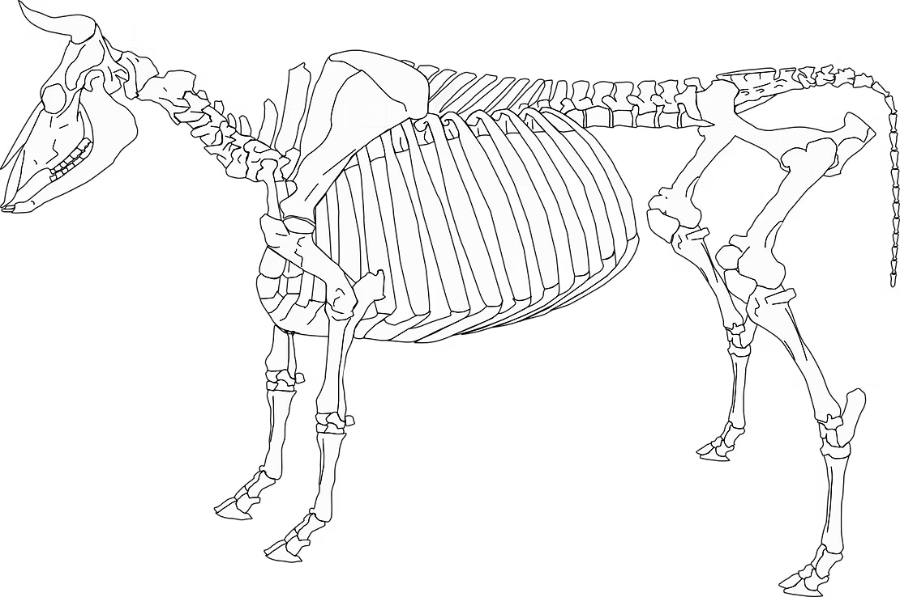

Why Did Ancient Farmers Start Using Cows to Plow Fields?
A cow is a large, heavy, somewhat stubborn animal. Convincing one to walk in a straight line while dragging a heavy wooden plow sounds challenging. So why did ancient farmers bother? The answer is that the ox-drawn plow changed everything about how humans lived.
The Problem with Farming by Hand
Before animal-powered ploughing, farmers could only cultivate small plots of land, as much as a human being could dig and turn with a hand tool. This put a hard limit on how much food a community could grow, which in turn limited how many people could live together in one place. Early farming villages were small for a reason: the land they could work by hand was not enough to feed a large population.
The introduction of the ox-drawn plow shattered that limit. Suddenly, vast fields became farmable. More land meant more grain. More grain meant more food. More food meant more people could survive and live together. The plow is one of the great engines behind the rise of early cities and complex societies, a revolution so fundamental that its effects are still shaping the world today.
How Bones Prove When Ploughing Began?
But how do zooarchaeologists know when this began? They look for pathologies, disease and injury in the bones of cattle. Cattle used for heavy labour develop very characteristic skeletal changes. Repeated stress on the feet and legs causes osteophytes (bony outgrowths) and exostoses to form around the joints. These changes show up particularly in the leg bones and phalanges of cattle that spent their lives ploughing fields, pulling heavy loads, or walking in hard terrain.
Researchers have found precisely these kinds of pathological bone changes at Chalcolithic sites such as Marj Rabba, Tel Tsaf, and Shiqmim, some of the earliest evidence for cattle traction in the ancient Near East. The bones don't lie: these animals were working. And when scientists date those bones, they can tell us exactly when this transformation in ancient farming history began.
More Evidence: Figurines, Donkeys, and Trade
It's not just the bones. A bull figurine from Ein Gedi shows a cattle-powered churn, suggesting cattle were being used for both labour and dairy production at the same time. And the introduction of donkeys into the region during this same period, the Late Chalcolithic, adds further evidence of a growing need for beasts of burden, animals that could carry goods over long distances to fuel emerging trade networks.
Together, the bones, figurines, and archaeological context paint a picture of a world in rapid transformation: communities growing larger, farming becoming more efficient, and animals playing a bigger role than ever before in human economic life.
From the Past to the Present: Animals Still Work
This is a wonderful moment to connect ancient history to the world your children see today. Horses still pull carriages. Dogs herd sheep. Elephants carry loads in parts of Asia. The relationship between humans and working animals is thousands of years old and still very much alive. What changed is the scale: in ancient times, an ox might plow one family's field. Today, a single tractor can do the work of hundreds of ancient ox teams.
Ask your children: what work do animals still do for humans today? What did they do 5,000 years ago that machines now do? What changed, and what stayed the same? There are no wrong answers, and the conversation might lead somewhere surprising.
The Neolithic Revolution — the period when humans transitioned from hunter-gatherers to farmers — is explored in depth in Volume II of the ZooArchaeology for Kids book series. Animal labor was a crucial part of that story, and seeing the actual bone evidence behind it makes history come alive.

References
Namdar, L., Bartosiewicz, L., May, H., and Sapir-Hen, L. 2024. Animals' paleopathology: Implications on human–animal interaction during the intensification of farming in the Southern Levant. International Journal of Osteoarchaeology, e3333. https://doi.org/10.1002/oa.3333
Namdar & Sapir-Hen 2023. Animal economy in the Chalcolithic of the Southern Levant. Springer.